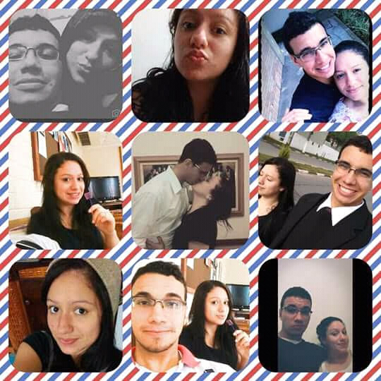

Aqui estão algumas lembranças especiais do nosso curto, mas incrível tempo de namoro.
Cada momento que passamos juntos foi inesquecível e especial. O começo de nossa história sempre será guardado no meu coração.
Você Lembra? 11 de Julho de 2015, após uma semana de enrolação, e assuntos não resolvidos, após o baile do Juventus nos acertamos e decidimos ficar juntos...
Eu realmente gosto da nossa história... começamos a conversar naquela noite, véspera do domingo de Páscoa, e foi uma noite muito agradável...
A nossa amizade evoluiu para flerte, e você estava confiante que nada aconteceria, hahahahaha.
No dia do seu aniversário, enquanto eu voltava da faculdade, ousadamente me convidei para ir até sua casa para te dar "Seu presente de aniversário"...
Voce não acreditava em tamanha audácia da minha parte. Estava frio e uma garoa fina batia gelada contra mim, enquanto eu chamava no seu portão vestindo apenas uma bermuda (não achei que o tempo fosse mudar tanto).
Voce atendeu e foi surpreendida com um selinho, entrei e conheci sua familia, me apresentei como seu amigo e sua mãe me ofereceu janta, era figado acebolado, voce ficou com vergonha pela simplicidade e eu encantado com tal recepção, sua mãe pegou um bolo que trouxe do serviço e cantamos parabéns, depois de tudo, sua mãe ainda me fez um chá de gengibre e me convidou para passar a noite em sua casa.
Que noite incrivel, sou capaz de relembrar muitos detalhes daquele dia.
Em algum momento decidimos que você não iria pra missão, e eu não seria consultor do FSY, e que ao invés disso nós iriamos nos casar. Eu morava no Parque Industrial e voce disse não se importar, então começamos a nos planejar.
Naquele tempo o Luizinho e a Alice também estavam namorando, e nós quatro passavamos muito tempo juntos, saiamos pra comer, iamos as atividades da igreja, era muito bom. Por conta disso algumas pessoas diziam que em breve seriamos pais, aí pra não dar razão ao que diziam, passamos os 9 anos seguintes sem engravidar hahahahahaha
"Melhor de padre do que de Noivo"... Essa frase ficou marcada em nosso namoro/noivado, por que fomos para aquele ensaio que a Rebeca nos pediu ajuda, era algo pro curso que ela estava fazendo de fotografia. O ensaio era uma cerimonia de casamento e por ter poucas pessoas, acabei sendo padre e noivo.
Voltar para a página principal